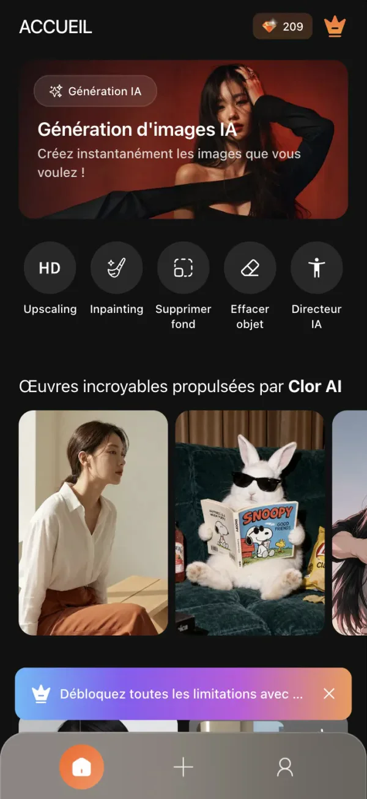
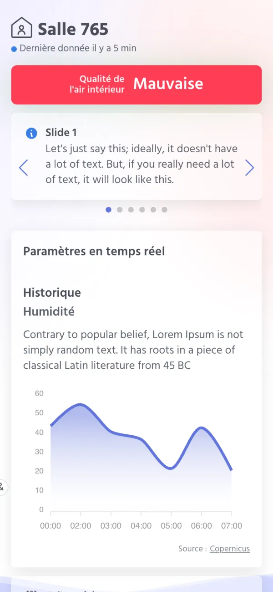
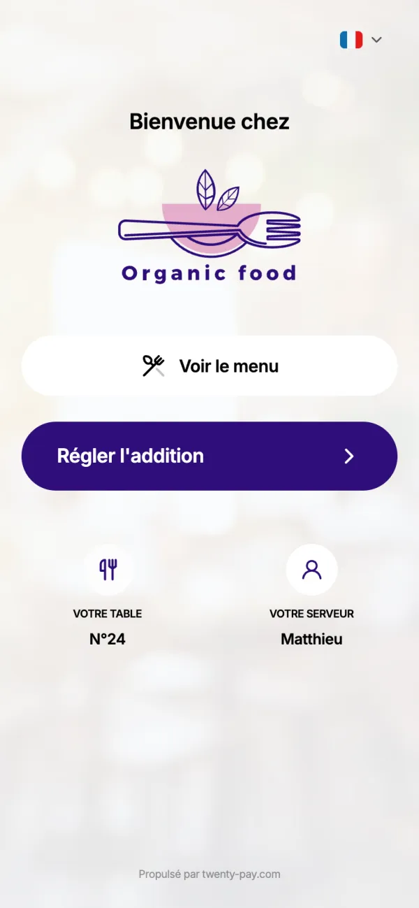
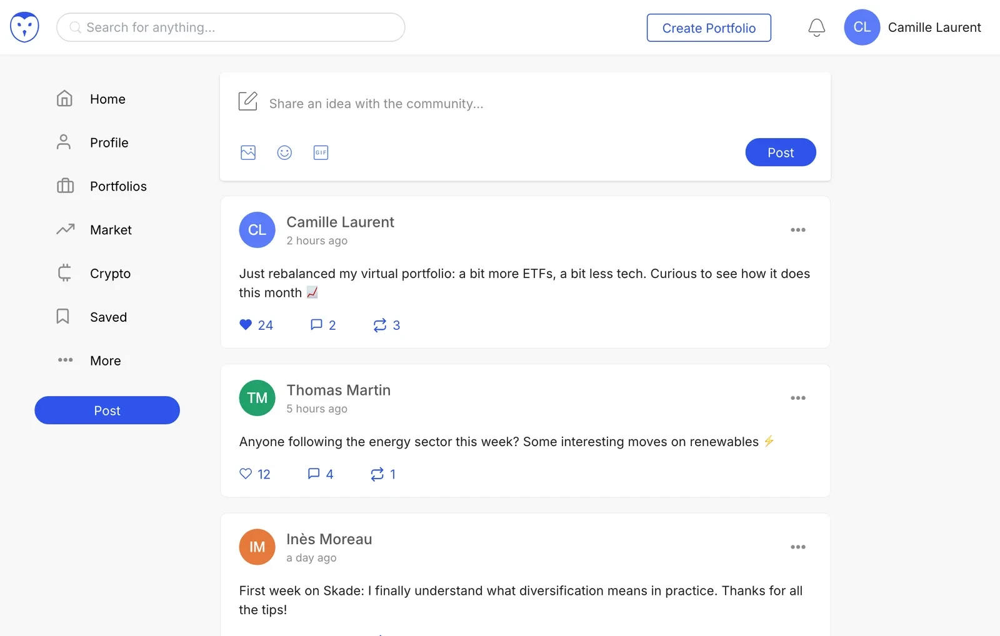

Jessica Thielemans
Développeuse front-end avec plus de cinq ans d'expérience en développement web.
Développeuse front-end à Séoul, chez Infinique.
Développeuse front-end avec plus de cinq ans d'expérience en développement web.
Développeuse front-end à Séoul, chez Infinique.
Un éditeur photo avec des outils d'IA (retouche de portrait, pose, couleurs), sur le web, sur ordinateur et sur mobile.


Interfaces d'un logiciel (SaaS) de gestion de bâtiments, qui suit la qualité de l'air (notamment le taux de CO2) et la consommation d'énergie.


Refonte progressive du front-end d'une marketplace de pharmacies : annonces de vente, offres d'emploi et contenus pour les pharmaciens.


Site vitrine de Nomiks, une société de conseil et d'investissement autour de la blockchain : un accueil et deux pages pour ses offres, en anglais et en français.


Trois produits pour un même client : un site pour créer son CV, une appli pour payer l'addition au restaurant, et un service pour résilier ses abonnements.


Nouveau style pour le site d'Otoctone, une collection de lieux de séjour d'exception (villa au bord du lac Léman, chalet au Mont-Blanc, maison au Costa Rica…).


Site de Le Plein, un réseau de bornes de recharge pour voitures électriques installées sur les parkings d'enseignes partenaires, avec un programme de fidélité.


Application pour apprendre à investir sans risque : portefeuilles virtuels, communauté d'investisseurs et actualités des entreprises.


Toutes les pages projets en détail, en français, en anglais et en coréen, sur jessica-thielemans.com.